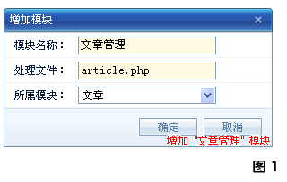
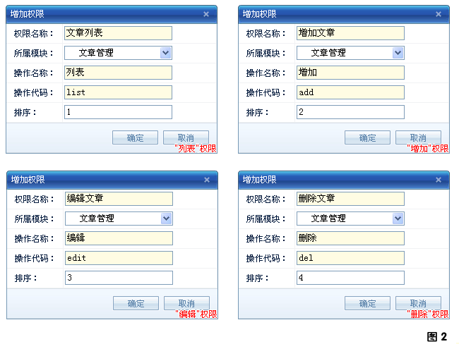

同
文章类别
模块一样：开发的第一步还是添加模块和权限！
1. 模块添加
"文章管理"模块和"
文章类别
"模块一样同属于"文章"模块组，所以这里就不需要添加"文章"模块组，只需要添加"文章管理"模块即可。
打开 "模块菜单树" 中的 "内核->模块管理"，然后点击右上边的 "增加" 按钮打开增加模块的窗口，按下图添加"文章管理"模块信息：

增加模块详细介绍
2. 权限添加
打开 "模块菜单树" 中的 "内核->权限管理"，然后点击右上边的 "增加" 按钮打开增加权限的窗口，按下图依次填写...

增加权限详细介绍
3. 完成！
点击 "
模块菜单树
" 上方的 "权限系统刷新" 按钮即可在 显示 "文章管理" 菜单项！